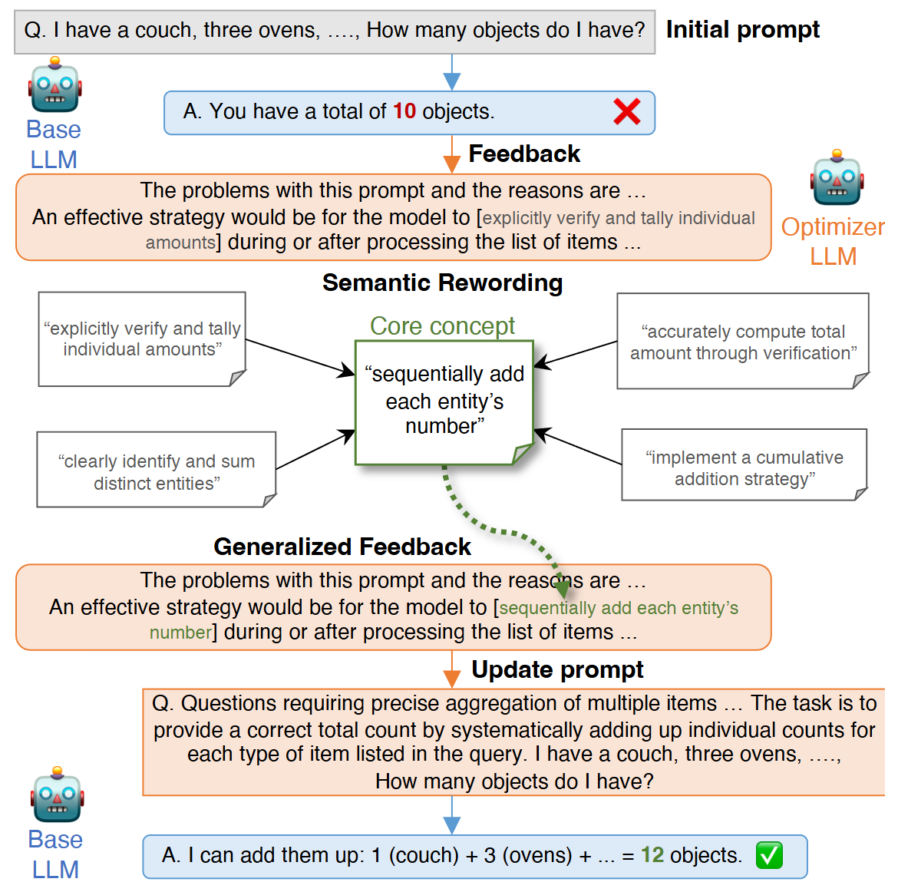
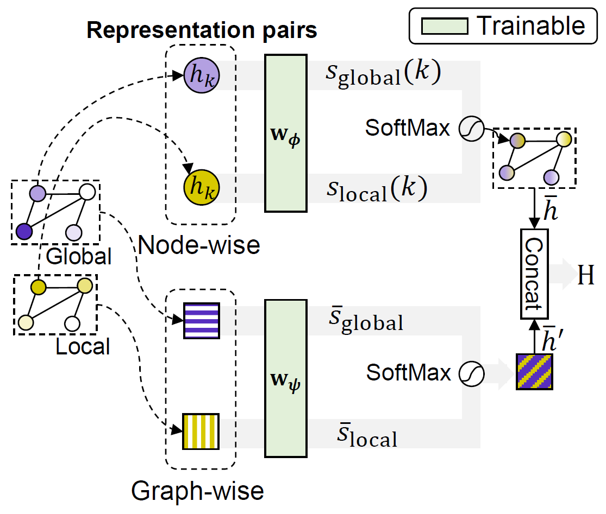
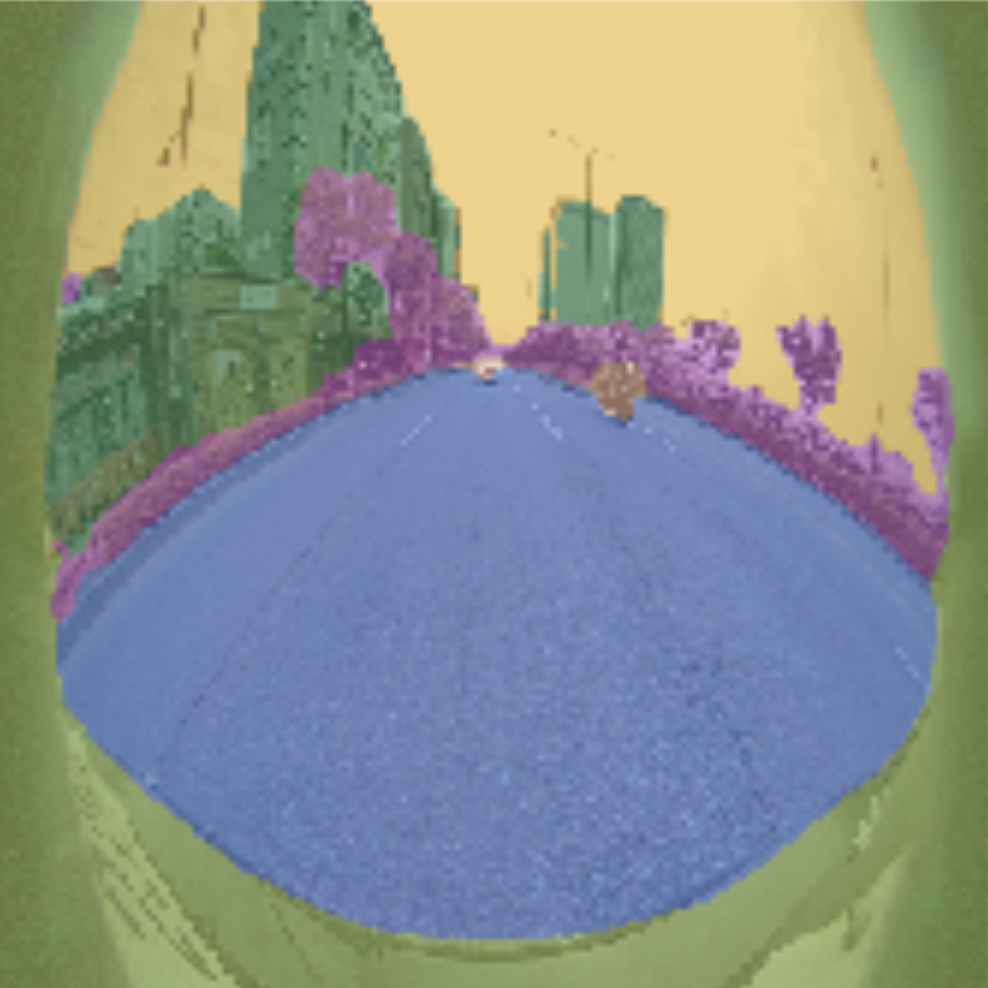
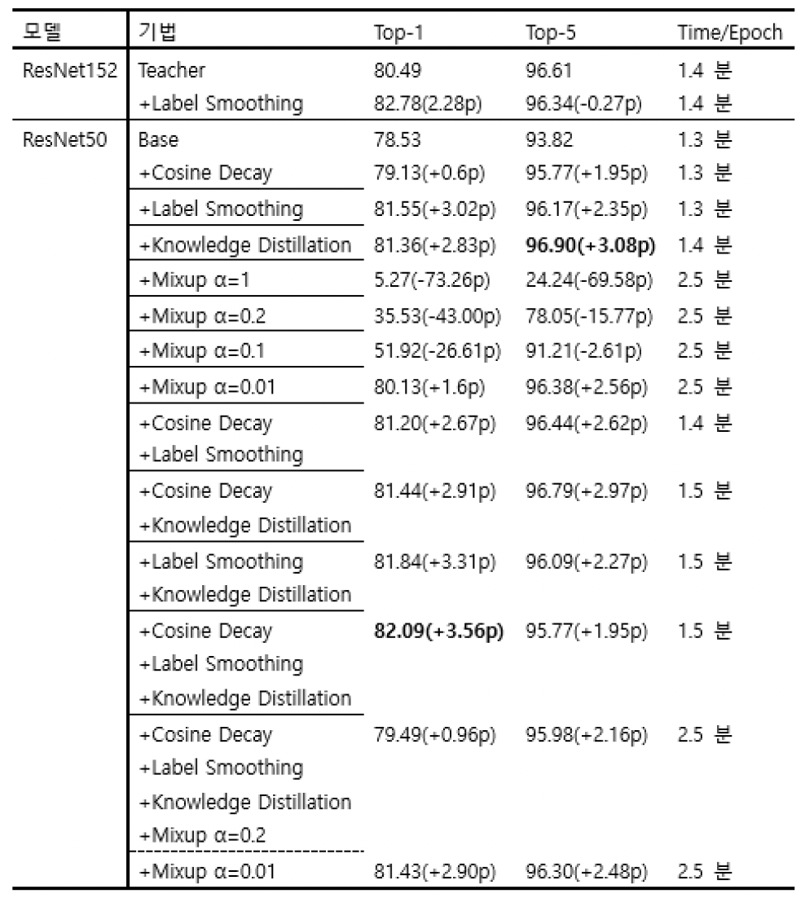
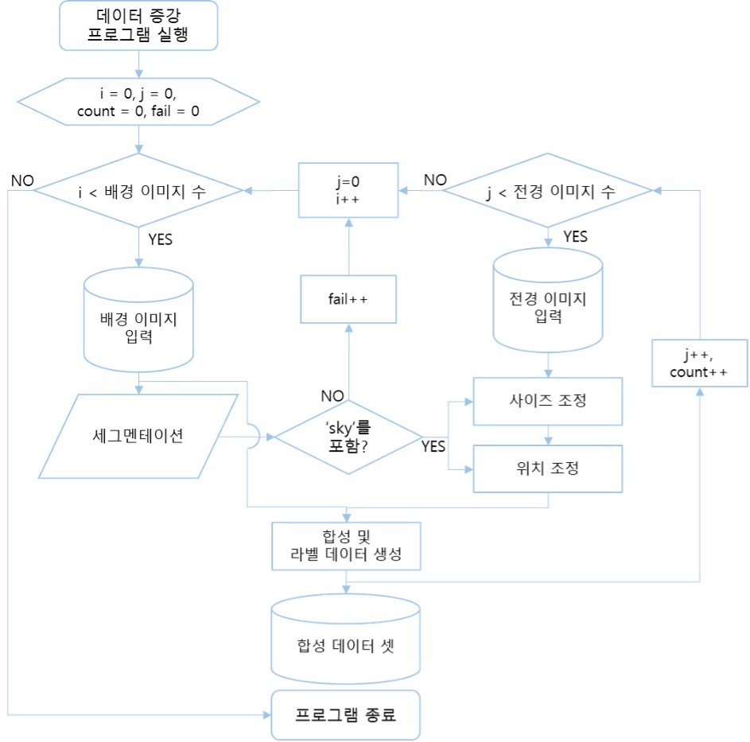

|
Minhyuk An I'm currently a master's student in the department of Artificial Intelligence at Yonsei University. I am working at the Soft Computing Laboratory (SCLab) and am fortunate to be advised by Sung-Bae Cho. |
{kind=link}
Education
Yonsei University, Seoul, South Korea (2023.09 — 2025.08)
|
Technical Skills
Programming Languages:
Python / C / C++
|
ResearchI have a keen interest in AI/ML as a whole with data of any kind—images, text, audio, graphs, and more! Particularly, I am deeply fascinated by gaining a deeper understanding of data for real-world applications. |
|

|
Prompt Optimization for Large Language Models with Generalized
Feedback via Semantic Centrality
Minhyuk An (Leader), Tae-Hoon Kang, Haerin Byeon, Sung-Bae Cho Preprint, ACL 2025 (under review) Paper / Code
AI Agents / Large Language Models / Prompt Optimization / Black-box Optimization / Dialogue & Interactive Systems / Monte Carlo Tree Search |
|

|
Local-Global Blending Graph Neural ODE Network for Graph Classification
Minhyuk An, Sung-Bae Cho Preprint, IJCAI 2025 (under review) Paper / Code
Graph Neural Network / Representation Learning / Graph Mining / Neural Ordinary Differential Equations |
Undergraduate Projects |
|

|
Samsung AI Challenge : Camera-Invariant Domain Adaptation
Minhyuk An (Leader), Gihun Son Competition (ranked 30/211), 2023 Code
Domain Adaptation / Domain Adaptive Semantic Segmentation / Semi-Supervised Learning / Pseudo Labeling / Adaptive Cutmix |

|
Crowd Counting Using Diffusion-Based Latent Space
Gihun Son, Minhyuk An (PM), Siwon Lee Capstone Project (Advisor: Sungeun Hong), 2023 Paper / Poster / Code
Crowd Counting / Diffusion Models |
|

|
Applying Bag of Tricks for Improving Accuracy
Minhyuk An Personal Toy Project, 2023 Report / Code
Knowledge Distillation / Learning Rate Scheduling / Label Smoothing / Mixup Augmentation / ResNet |
|

|
Study on Mitigating Class Imbalance
Minhyuk An Personal Toy Project, 2022 Report1 / Report2
Class Imbalance / Data Synthesis / Data Augmentation / Semantic Segmentation / Data Sampling |

|
3D Object Detection for Self-Driving Cars
Minhyuk An and 13 members Competition, 2022 Demo / Note1 / Note2
3D Object Detection / Sensor Fusion / Calibration / ROS / Custom Datasets |

|
Speech Classification for Gender and Speaker Identification
Minhyuk An (Leader) and 2 members Group Project, 2021 Report
Audio Analysis / Digital Signal Processing / K-means Clustering |
Research Projects
지속 가능한 협업형 멀티 모달 평생 학습 프레임워크 개발 (2023.12 — 2024.12)
|
Patent
교사 모델을 이용한 지식 증류 방법 및 장치 (10-2024-0141487)
|
Achievements & Experience
Teaching Assistant (Fall 2024)
|
|
The finest template from Jon Barron |